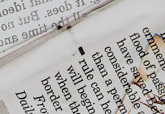
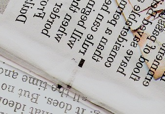
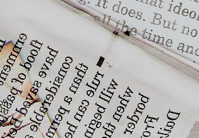

Przykładowa kategoria
Poradnik
– Czy nie mógłby pan mnie poinformować, którędy powinnam pójść? – mówiła dalej. – To zależy w dużej mierze od tego, dokąd pragnęłabyś zajść – odparł Kot-Dziwak. – Właściwie wszystko mi jedno. – W takim razie również wszystko jedno, którędy pójdziesz. – Chciałabym tylko dostać się dokądś – dodała Alicja w formie wyjaśnienia – Ach, na pewno tam się dostaniesz, jeśli tylko będziesz szła dość długo.
Dla mężczyzn
Cóż, jeśli wolno, przyzna pan, że kryje się coś niedobrego w mężczyznach, którzy unikają wina, gier, towarzystwa pięknych kobiet i ucztowania. Tacy ludzie albo są ciężko chorzy, albo w głębi duszy nienawidzą otoczenia. Co prawda zdarzają się wyjątki. Wśród tych, z którymi wypadało mi ucztować, zdarzali się od czasu do czasu niewiarygodni szubrawcy!... Słucham więc, co pana sprowadza?
Dla kobiet
Ludzkość cierpi na niedobór mężczyzn, w szczególności zaś mężczyzn, którzy są czegoś warci.
Błogosławieni, którzy nie mając nic do powiedzenia, nie ubierają tego w słowa.